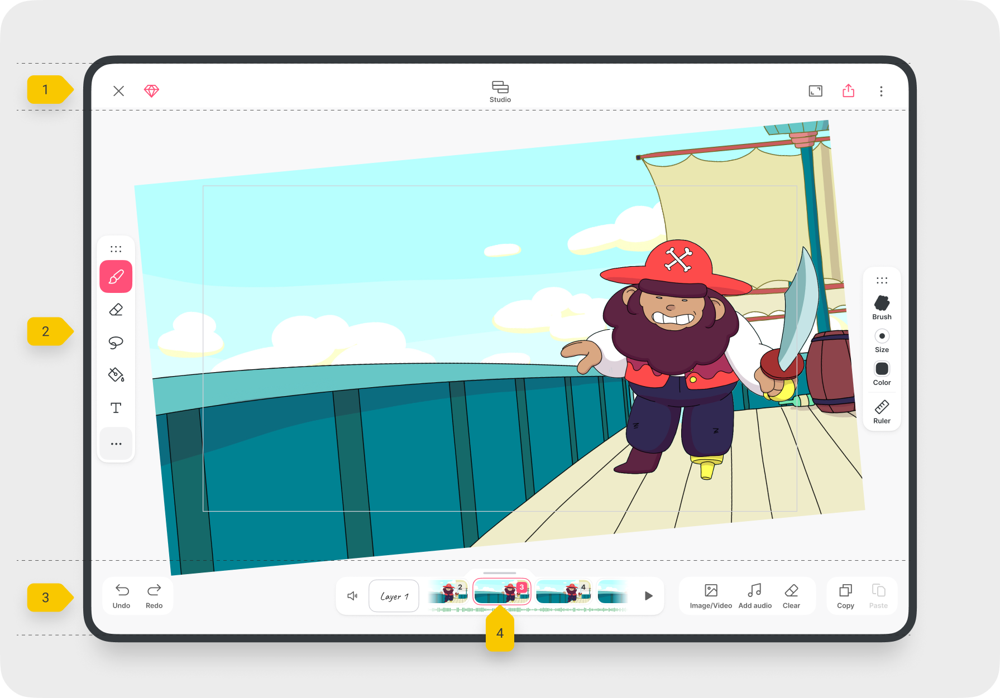
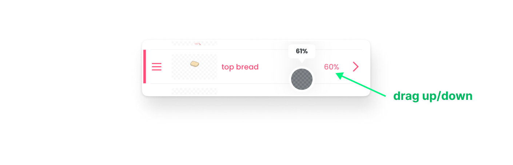
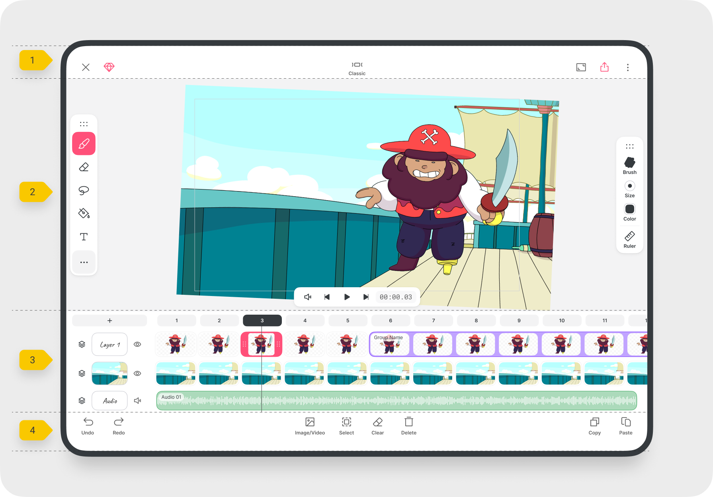

手机上能做出像样的动画？FlipaClip 从零上手实战
平板或手机画动画不是天方夜谭。跟着这篇教程，用 FlipaClip 从新建工程到导出成品走一遍完整流程，图层、时间线、AI抠图三个核心玩法一次搞定。
读完这篇教程，你能在手机或平板上独立完成一段带转描、分层和简单配音的逐帧动画短片——不是画个小人跳跳那种 demo，而是有完整工程结构、能导出视频文件的正经作品。
准备工作：设备、版本和你需要知道的事
FlipaClip 跨 iOS、Android 和桌面，但手机端体验最完整——画板握在手里，手指就是笔，这是桌面软件给不了的手感。它的官网上功能说明写得很清楚。免费版够用，Plus 订阅解锁无限图层和 AI 功能，第一次打开会送 7 天试用，可以先跑通流程再决定要不要续费。
安装包从官方下载拿，装好之后第一次启动会引导你创建第一个工程。工程参数别纠结：画布比例按发布平台选（9:16 适合短视频，16:9 适合横屏），帧率 12fps 是逐帧动画的黄金起点——再低会抖，再高工作量翻倍。
第一步：新建工程，Classic 和 Studio 布局选哪个
进入编辑器之后第一件事不是画，而是找布局切换按钮。FlipaClip 有两套布局：Classic 专注作画，Studio 专注编排。
新手默认进 Classic，画布占满屏幕，工具在两侧。先在 Classic 里完成你的原画稿——这是画帧的主战场。底部时间线此时只露出一小条，别急着展开，画完几帧之后再切到 Studio 去排时间。

第二步：图层不是越多越好，先理解它的用处
画第二帧之前，先打开图层面板。默认只有一个绘图层，点加号可以继续加，但层数不是无限的——免费版看广告逐层解锁，最多到 10 层；订阅版不限。到达上限还想继续加怎么办？合并两层内容腾出一个层位，这是官方给的解法。
关于图层面板，有两个操作你必须先记住：
- 隐藏层：点层右侧显示百分比数字的位置，那一层的画面就从舞台上消失了，方便你只盯着某一帧单独检查；再点一次眼睛图标恢复。
- 调不透明度：按住那个百分比数字上下滑动——往上越实，往下越透。这个在转描时尤其关键：把导入的视频层透明度调到 40%~60%，就能在半透明的视频底上描摹自己的线稿。

一个容易混淆的点：图层的不透明度影响整层所有帧，如果你只想让某一帧的某块颜色变淡，应该用画笔工具里的颜色透明度，两者作用范围完全不同，别搞混。
第三步：开始画——逐帧不是逐张复制粘贴
初学者最常犯的错：画好第一帧，复制粘贴十次，完事。这样做出来的动画是静止的，只是一张图停在不同位置。
正确的逐帧逻辑是每一帧都要做变化——哪怕只是角色的眼皮动一下，头发飘一根，或者背景里有一片云在慢慢走。FlipaClip 时间线上每一帧都是独立的画布，你在上一帧的基础上修改，下一帧就记录了这个变化。
建议的起手节奏：
- 先画关键帧（动作的起止点）；
- 在两个关键帧之间插中间帧，把过渡补满；
- 回到 Classic 布局逐帧微调细节。
画的过程中随时点播放按钮预览，不要等全部画完才看——逐帧动画的节奏问题早发现早改。
第四步：切到 Studio 布局排时间，让画面「活」起来
画了五六帧之后，点布局切换按钮切到 Studio。这个布局的核心价值是完整的时间线视图——每一层占一行，帧方块横向排列，音频轨也在同一个视图里，所有元素的时间点一目了然。
在这里你要做几件事：
- 拉长帧：抓住某帧的左右边缘往外拖，让一张画在画面上停留更久——替代你在 Classic 里反复复制粘贴的做法；
- 修剪音频：导入一段配音或 BGM，在时间线上直接切分、对齐到对应的画面；
- 批量选帧：按住顶部时间标尺上的某个刻度，可以选中所有图层在这一时刻的内容，整体移动或删除。

Studio 和 Classic 之间切换零成本，工程数据完全共用。实战里最顺手的工作流就是 Classic 里画帧，Studio 里排时间，来回切不丢东西。Studio 时间线上的批量帧操作细节在FlipaClip文档里有完整的手势说明。
第五步：Magic Cut 抠图——照片也能变成动画素材
画了几帧之后你可能想：能不能把一张真人照片也放进动画里当素材？这就是 Magic Cut 的用处——Plus 专属的 AI 抠图功能，选一张照片，AI 自动把主体（人物、物品）抠出来，生成带透明背景的素材，直接进工程当贴图用。
操作很简单：工程内点右上角三点菜单，打开 Magic Cut，允许访问相册，挑一张主体清晰、背景干净的图片——等几秒 AI 就会输出一摞抠好的素材，点选任一个就能加入你的动画层。抠好的素材还能在素材库里长按组合、删除或分享，不会浪费。
一个坑要注意：Magic Cut 不包含在早期买断的 Legacy Premium 捆绑包里——老 Premium 用户想用，还是得走 Plus 订阅或 7 天试用。
常见卡点：三个新手最容易翻车的地方
卡点一：层数不够了怎么办？ 别急着订阅。先用合并图层腾出位置——新版编辑器里按住一层进入多选模式，勾选要合并的层，点合并，多层内容就合成一个新层，原层消失，而且可以撤销。但合并前想清楚：合完就是铁板一块，每层的效果设置（发光、混合模式）也会固化。
卡点二：转描描不准，线稿和视频对不上。 十有八九是视频层透明度没调对。太高了看不清自己的线稿，太低了视频糊成一片。从 50% 开始试，根据视频对比度微调——画面亮的视频透明度要更低一些，暗的视频可以高一点。
卡点三：导出的视频抖，或者画面一顿一顿。 基本有两个原因：一是中间帧没补够，动作跳得太猛；二是帧率和导出设置不匹配。回去 Studio 布局里检查帧之间的过渡有没有断档，确认工程帧率和导出帧率一致。
进阶一句话
跑通一遍完整流程之后，试试把 Magic Cut 抠出来的真人素材和手绘帧混合用——照片当脸，手和脚用手绘逐帧动画，出来的是一种独特的混合风格，效果比纯手绘快得多，也比纯照片有味道。
FlipaClip 的门槛不高，但要做出像样的作品需要一点耐心。手机上画动画确实不如数位板顺手，但它的优势是随时随地都能掏出来改两帧——灵感不会等你回到电脑前。这套资料在GitHub、Gitee、GitCode三个仓库都同步维护着，国内访问哪个顺手就用哪个。把这篇教程里的五个步骤走一遍，你就有了一套完整的移动端逐帧动画工作流。